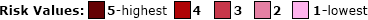
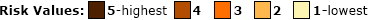
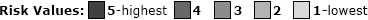
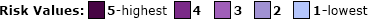
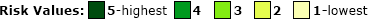
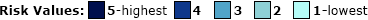

Quick Facts
{{county_pop}}
Population
Population
{{county_65}}
People aged 65+
People aged 65+
{{county_cov_case}}
Cases Total
Cases Total
{{county_cov_deaths}}
Deaths Total
Deaths Total
{{county_total_risk}}
Risk Total
Risk Total
{{current_risk_factor}} risk factors
Total {{current_risk_factor}} risk
{{current_factor}}
Click on a risk category to see risk factors.
Click on a risk factor bar to update map visual.
Click on a risk factor bar to update map visual.
*Cases/Deaths set to 0 if negative
{{county_name}} County {{current_risk_factor}} risk factors
as compared to the mean of other MO counties
as compared to the mean of other MO counties





